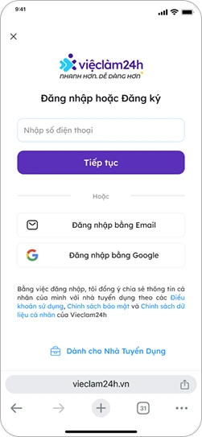

01Context
Users were dropping off right before applying.
Jobseekers could browse without an account, but had to log in to apply. That was where we lost them.
- Search jobsNo account needed
- Open a jobStill no account
- Log inPeople drop off here
- ApplyWhat we want
02Discovery
What was going wrong?
Looking at the funnel and the old screens, we found three problems.
- 01
Facebook login kept failing
17% of users picked Facebook. 85% of them never got in, because of errors or a pop-up they didn’t see.
- 02
Verification was confusing
New users didn’t know what they had to verify, or why.
- 03
People lost their place
After logging in, nobody was taken back to the job they wanted.
Old flow, around the login page % of login page views
03Design decisions
Simplifying the experience.
We made three calls. Each one fixes one of the problems above.
One flow for login and sign-up
Users shouldn’t have to remember if they already have an account. The system can work that out.
OTP first
A phone number and a one-time code. It works for almost everyone and doesn’t depend on a pop-up.
Back to the same job
The reason they logged in was to apply. So that’s where they land.
04Solution
A simpler way to log in.
Users start with a phone number, email or Google. The same flow handles new and existing accounts, so nobody picks between login and sign-up first.

New flow
- Enter phone number
- Verify with OTP
- Code valid?No: try again
- Logged in, back to the job
05Impact
Did it work?
Yes. Login conversion went up 8.4% and job applications 5% in the first month. Less friction at login meant more people finished what they came to do.
New flow, step by step Overall 83.39%
06Learnings
What we learned after launch.
The new flow did better, but some people still dropped off before verification. That told us where to look next.
Next steps
- Find out why people leave before they ask for the code.
- Write clearer error messages when a code fails.
- Keep sending people back to the job. It works.
How people log in now
- Phone number62.3%
- Google24.1%
- Email10.8%
- Facebook2.8%